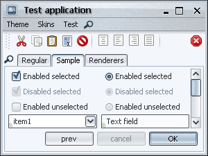
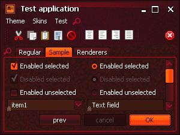
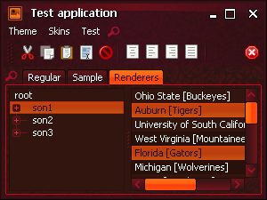
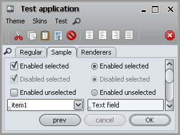
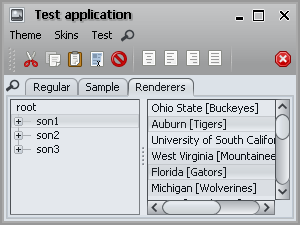
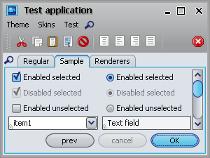
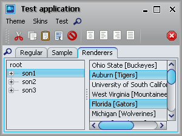
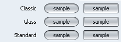

New skins
Six new skins have been added.
The first is Nebula which uses the colors of Nimbus and the title painter inspired by the Orange Metallic theme of Synthetica:

The second is Nebula Brick Wall which uses the colors of Nimbus and an orange title painter inspired by the Orange Metallic theme of Synthetica:


The third is Autumn which was added as an experimental skin in a previous release and has been largely reworked. You can see more informantion and screenshots of Autumn skin here.


The fourth is Magma which was added as an experimental skin in a previous release and has been largely reworked. You can see more informantion and screenshots of Magma skin here.
 The fifth one is the experimental Mist Silver which uses gray colors and header painter inspired by Safari:
 The sixth one is the experimental Mist Aqua which uses aqua colors and header painter inspired by Safari:
 State-aware theme transitions
You can use the new APIs provided on the
org.jvnet.substance.theme.SubstanceComplexTheme
to specify state-specific theme and alpha channel. The APIs are:
/**
* Registers a theme for the specific component state.
*
* @param stateTheme
* Theme for the specified component state.
* @param useForHighlights
* if <code>true</code>, the specified theme will be used as
* highlight theme as well (for the same component state).
* @param states
* Component states.
*/
public void registerComponentStateTheme(SubstanceTheme stateTheme,
boolean useForHighlights, ComponentState... states)
/**
* Registers a theme for the specific component state.
*
* @param stateTheme
* Theme for the specified component state.
* @param alpha
* Alpha channel for the theme.
* @param useForHighlights
* if <code>true</code>, the specified theme will be used as
* highlight theme as well (for the same component state).
* @param states
* Component states.
*/
public void registerComponentStateTheme(SubstanceTheme stateTheme,
float alpha, boolean useForHighlights, ComponentState... states)
/**
* Registers a highlight theme for the specific component state if the
* component state is not <code>null</code>, or a global highlight theme
* otherwise.
*
* @param stateHighlightTheme
* Highlight theme for the specified component state.
* @param states
* Component states. If <code>null</code>, the specified theme
* will be applied for all states left unspecified.
*/
public void registerComponentHighlightStateTheme(
SubstanceTheme stateHighlightTheme, ComponentState... states)
/**
* Registers a highlight theme for the specific component state if the
* component state is not <code>null</code>, or a global highlight theme
* otherwise.
*
* @param stateHighlightTheme
* Highlight theme for the specified component state.
* @param alpha
* Alpha channel for the highlight theme.
* @param states
* Component states. If <code>null</code>, the specified theme
* will be applied for all states left unspecified.
*/
public void registerComponentHighlightStateTheme(
SubstanceTheme stateHighlightTheme, float alpha,
ComponentState... states)
The Office Silver 2007 uses these APIs in order to provide visual differentiation of various component states. In the movie clip below, the right column shows the model state at each moment, and you can follow the color transitions from selected (light orange) to selected rollover (dark orange) to pressed selected (reddish orange) and back to rollover unselected (orangish yellow). Note that on the checkboxes and radio buttons, the transitions also involve animating the color of the checkmark:
The animations are done not only on the background gradient fills, but also on the foreground (text). You can have black text on light background in a regular state, and light text on dark background in an active state. The new Nebula, Nebula Brick Wall and Magma provide examples of foreground color animations. The following movie clip shows it on the button press:
The transitions apply not only to the "traditional" button controls such as push buttons, toggle buttons, check boxes and radio buttons, but to much wider range of controls - tabs, sliders, scroll bars, menus, menu elements etc. In addition, the same settings apply for rollover and selection effects on lists, tables and trees.
The last movie clip shows the state-aware transition animations under the new
Magma skin on a custom JXMonthView component from
SwingX project. The rollover and selection
animations are done on both the background and the foreground colors.
Note that the animations are done on the individual days as well as on the month
view header (which uses drop-shadow painting of the month / year strings):
Smart tree scroll
The new SubstanceLookAndFeel.TREE_SMART_SCROLL_ANIMATION_KIND
fade kind provides an option to install "smart scroll" on
JTrees. It is disabled by default and
can be enabled by the relevant
FadeConfigurationManager APIs.
Once you scroll the tree to an (almost) blank view, it automatically scrolls horizontally (as needed to the left or to the right) to bring you in sync with the visible (informational) part of the tree. This might be a valuable feature for narrow viewports and trees with many levels, since you're only operating the vertical scroll bar and never get "lost" in blank areas. For more information and a movie clip read this blog entry.
Glowing icons (buttons, option pane)
The new FadeKind.ICON_GLOW
fade kind provides an option to make the icons of certain controls "glow"
(the current implementation is playing with the overall brightness level
instead of the
full-featured
bloom that works reasonably well on large images, but doesn't scale down to
small icons). By default, this effect is enabled on option pane icons.
To enable it on buttons, use the relevant
FadeConfigurationManager APIs.
The video clip below shows the glowing effect on the option pane icon (note changes in the icon brightness level):
Support for JXPanel translucency
The JXPanel.setAlpha(float) is fully supported by all UI delegates. To test, use the rightmost slider in the main test application.
SwingX UI delegates
The Substance-SwingX plugin provides support for the following SwingX components:
- JXTaskPaneContainer and JXTaskPane
- JXStatusBar
- JXTitledPanel
- JXTipOfTheDay
- JXLoginPanel
- JXMonthView
- JXHeader
- JXErrorPane
- JXDatePicker
- JXHyperlink
A screenshot of a JXErrorPane
under the new Nebula skin (using Vista-compatible
font family, font size and hinting):
A screenshot of a JXMonthView
under the Raven skin (using Vista-compatible
font family, font size and hinting):
A screenshot of a JXStatusBar
under the new Autumn skin (using XP-compatible
font family and font size):
A screenshot of a JXTitledPanel
under the Business Black Steel skin (using XP-compatible
font family and font size):
Border painters
The painting of components has been separated into the background itself
(painted by the gradient painter) and the border (painted by the border painter).
The new BORDER_PAINTER_PROPERTY
client property allows setting a specific border painter on the component basis.
The value should either be an instance of
org.jvnet.substance.border.SubstanceBorderPainter or
the fully-qualified class name of a class that implements that interface.
In addition, you can use new APIs on the
SubstanceLookAndFeel class to set a global
border painter, query for all available border painters and other related functionality.
Read documentation on
getAllBorderPainters(),
setCurrentBorderPainter(
String borderPainterClassName),
setCurrentBorderPainter(
SubstanceBorderPainter currentBorderPainter),
getCurrentBorderPainter(),
getCurrentBorderPainterName(),
registerBorderPainterChangeListener() and
unregisterBorderPainterChangeListener()
Here is a screenshot to illustrate the difference between available core border painters (note how Standard painter uses darker colors on top portion and lighter colors on bottom portion:
New title painters - Brushed Metal, Marble Noise
Two new title painters have been added to the
org.jvnet.substance.title package.
The first is the Brushed Metal implemented in the
BrushedMetalHeaderPainter class. The
following screenshots show the Office Silver 2007 skin in the previous
release (the first image) and in the new release (the second image). The new release
uses the Brushed Metal title painter.
The second is Marble Noise implemented in the
MarbleNoiseHeaderPainter class.
The following screenshots show that the new Nebula
and Nebula Brick Wall skins use this title painter: